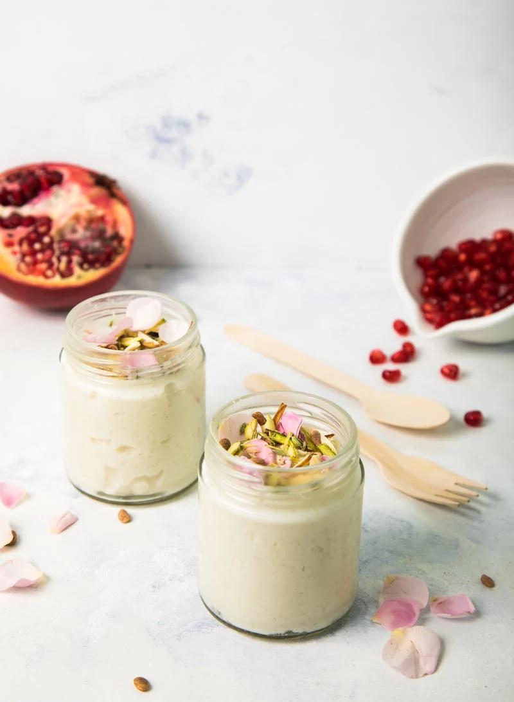

Rice Pudding

Rice pudding can be enjoyed as a comfort food when warm or serve it as a dessert after meal.
It's not only delicious but also a healthy treat for you and your family.
Ingredients
- 1 cup Rice
- 1.5 cups Sugar (can also be substitute with sugar-free sweeteners)
- 4 cups Milk
- 2 Cardamom pods (crushed)
- Rose essence - few drops
Steps
- Wash and soak the rice in water for half an hour.
- Boil milk with crushed cardamom pods.
- Now add soaked rice in the milk.
- Cook the pudding till rice cooked while stirring continuously.
- When rice are fully cooked and milk is about to thicken add sugar.
- Cook for few more mins or till there is a creamy consistency of the pudding
- Lastly add few drops of rose essence
- The pudding is ready, either serve warm or put it in the refrigerator to cool down and serve cold
- Enjoy simple yet delicious pudding.